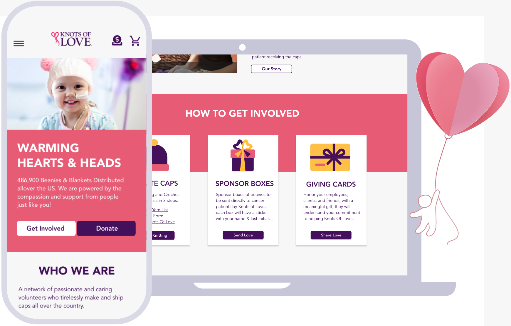
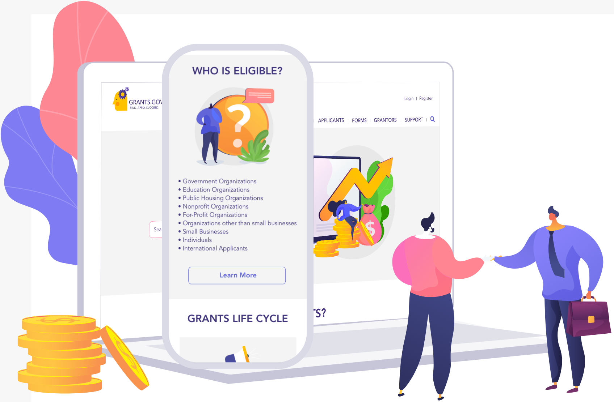

GRAPHIC LEAD - UX/UI DESIGNER
PAINTING EXCEPT
UI DESIGNER
RESPONSIVE WEBSITE REDESIGN
Effective online presence is important for nonprofit organizations to increase number of donors and volunteers. Our scope was to improve the Knots of Love website, so users are able to easily donate and volunteer their time and resources.
UI DESIGNER
RESPONSIVE WEBSITE REDESIGN
Grants.Gov is difficult to navigate and flowing with information, making the experience on this website overwhelming. Our focus was to redesign a responsive website to be more cohesive and coherent.
